|
Roda JC - FC Twente (2-0) 24 december 2006
|
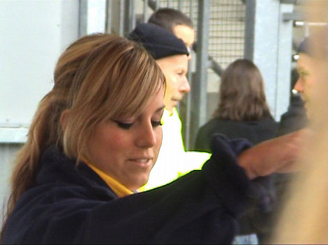
Bij elke ingang was er gratis Glühwein, chocomel en muziek.
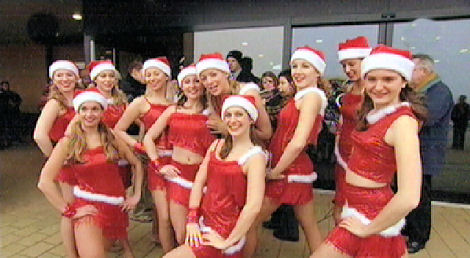
Fanfaremuziek en Kerstmuppen maakten het feest compleet.

Ook op de tribunes veel kerstsfeer.
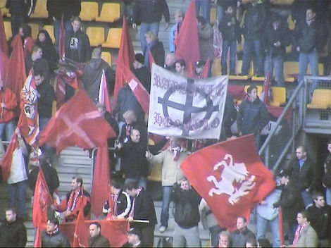
FC Twente had veel supporters mee.
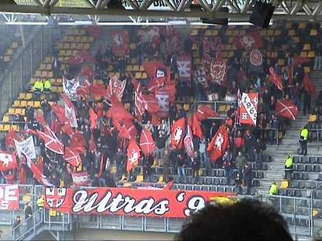
Een zee van vlaggen in het gastenvak.
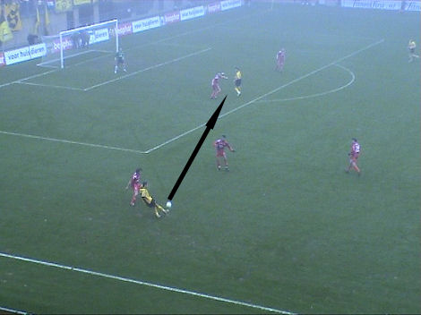
Slimme steekpass van Ramzi op Van Tornhout.
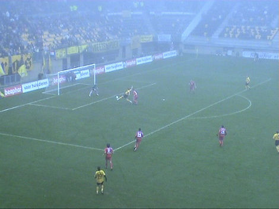
Van Tornhout lijkt de bal te raken maar deze gaat er toch op eigen kracht in. De
stadion-omroeper kondigt Ramzi in eerste instantie als doelpuntenmaker aan
maar gaat in de fout door Van Tornhout als scorer aan te wijzen na
het
bestuderen van de beelden. De bal is in elk geval voorbij Bosschker, dus 1-0, (2').
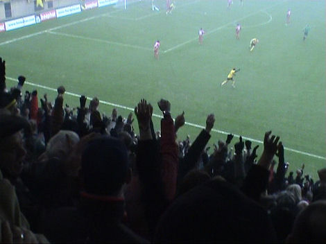
Een ongekende luxe in het koude en mistige Parkstad Limburg Stadion.
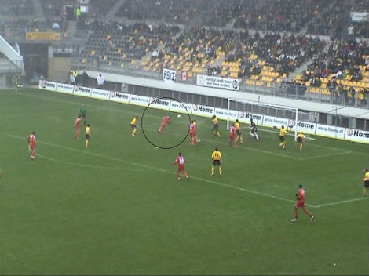
Uit een doorgekopte vrije trap vanaf rechts kan N'Kufo bijna gelijk maken.
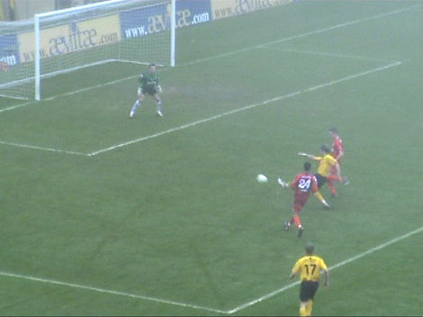
Van Tornhout wordt aangespeeld met een verre pass vanaf het middenveld en weet
zich tussen twee verdedigers door de ruimte te creëren om een schot te lossen.
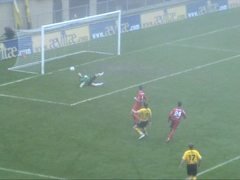
Voor de tweede keer wordt Bosschker gepasseerd: 2-0, (31').
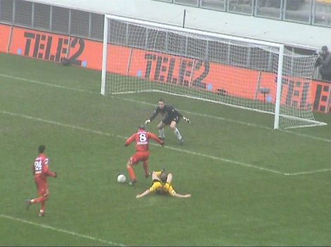
Minuut 39; Bakircioglu komt vrij voor Castro.
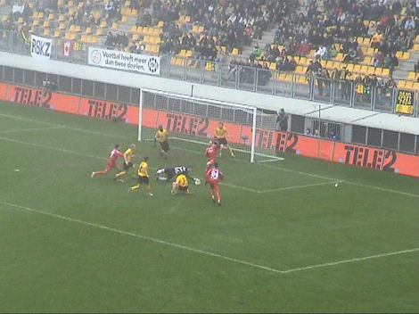
De doelman redt voortreffelijk.
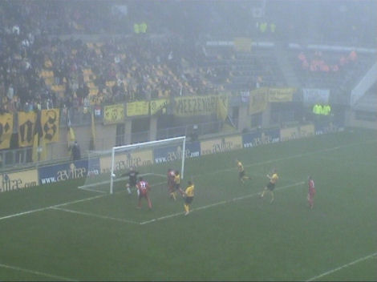
In de 64e min. schiet Bakkal op de paal.
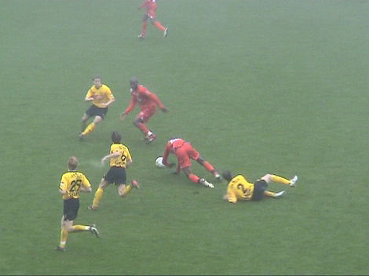
Het duel kent veel pittige duels zoals hier waar Senden een gele kaart oploopt
tegen reus Engelaar.
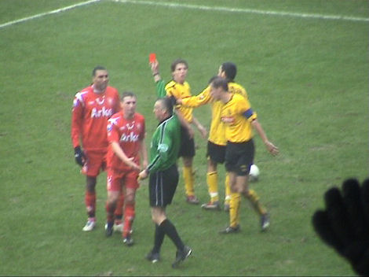
Heubach probeert scheidsrechter Luinge te lijmen wanneer hij zijn tweede gele
kaart ontvangt. Luinge neemt de hand niet aan en trekt de rode kaart (87').
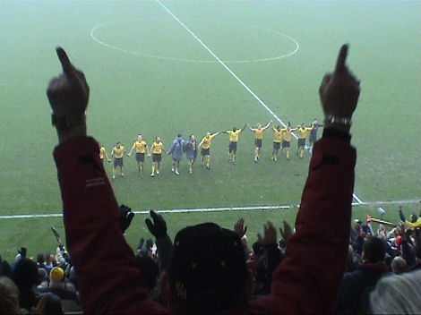
De drie hard nodige punten bezorgt het Roda-publiek een zalig kerstfeest.